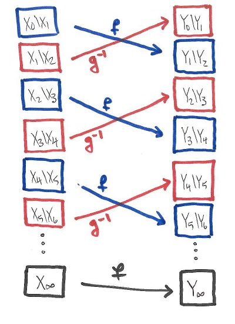

Let $\Gamma$ be a discrete group. Let $\lambda$ and $\rho$ be the left and right regular representations of $\Gamma$ on $\ell^2(\Gamma)$ determined on the standard basis $(e_g)_{g \in \Gamma}$ by $$\begin{array}{cccc} \lambda_g e_h= e_{gh} &&& \rho_g e_h = e_{hg^{-1}} \end{array}.$$
The von Neumann double-commutant theorem tells that, given a $*$-closed set $S \subseteq \mathbb{B}(H)$, there are two equivalent ways to describe the von Neumann algebra generated by $S$: the weak (or strong, or ultraweak, or ultrastrong) closure of the $*$-algebra generated by $S$, or the double commutant $S''$. Accordingly, we have two equivalent ways of defining the left group von Neumann algebra $vN_\lambda(\Gamma)$ or right group von Neumann algebra $vN_\rho(\Gamma)$.
Description 1:
Description 2:
Since the left and right regular representations commute, we have the von Neumann algebra containments $$\begin{array}{cccc} vN_\lambda(\Gamma) \subseteq \rho(\Gamma)' = vN_\rho(\Gamma)'&&& vN_\rho(\Gamma) \subseteq \lambda(\Gamma)' = vN_\lambda(\Gamma)' \end{array}$$ One naturally suspects these containments to be equalities, and indeed they are.
Theorem 3.1: $vN_\lambda(\Gamma)$ and $vN_\rho(\Gamma)$ are commutants of each other.
Interestingly, if we attempt to use Description 1 to prove this, things become rather problematic. On the other hand, if we use Description 2, this turns out to be rather easy. Thus, the above the theorem is a very nice demonstration of the power of the von Neumann double-commutant theorem. Starting from Description 2, one sees (after a little thought) that the thing to prove is precisely the following claim:
Claim: The von Neumann algebras $\rho(\Gamma)'$ and $\lambda(\Gamma)'$ commute with one another.
Let's describe the algebras in the claim a bit better. To say $T \in \mathbb{B}(\ell^2(\Gamma))$ belongs to $\rho(\Gamma)'$ is to say that $$ \langle T e_{h_1}, e_{h_2} \rangle = \langle \lambda_g T {\lambda_g}^* e_{h_1},e_{h_2} \rangle = \langle T e_{h_1g},e_{h_2g}\rangle$$ for all $g,h_1,h_2 \in \Gamma$, which amounts to saying that the matrix of $T$, viewed as a function $\Gamma \times \Gamma \to \mathbb{C}$, is constant along each part of the partition $\bigsqcup_{h \in \Gamma} \{ (hg,g) : g \in \Gamma \}$ of $\Gamma \times \Gamma$ into "diagonals". Note, however, that the matrix of $\lambda_h$ is precisely equal to the characteristic function of the "diagonal" $\{ (hg,g) : g \in \Gamma \}$, and so an operator $T \in \mathbb{B}(\ell^2(\Gamma))$ belongs to $\rho(\Gamma)'$ if and only if it can be expressed as a formal sum $$ T = \sum_{g \in \Gamma} c_g \lambda_g$$ where the summation should only be interpreted as a formula for the matrix of $\mathbf{T}$. The point is just that a function which is constant on every part of a partition can, formally, be encoded by infinite linear combination of characteristic functions of the parts.
By a similar discussion, the $S \in \lambda(\Gamma)'$ are precisely the bounded operators on $\ell^2(\Gamma)$ whose matrix can be expressed as a formal sum $S = \sum_{g \in \Gamma} c_g \rho_g$. Now we return to the
Proof of the claim: Let $S = \sum_{g \in \Gamma} a_g \rho_g \in \lambda(\Gamma)'$ and $T = \sum_{g \in \Gamma} b_g \lambda_g \in \rho(\Gamma)'$ be given (sums are formal). We want to show that $ST=TS$, which will follow from $$\langle ST e_{h_1},e_{h_2}\rangle = \langle TS e_{h_1},e_{h_2} \rangle$$ for all $h_1,h_2 \in \Gamma$. By writing $T = \lambda_{h_2} T_0\lambda_{{h_1}^{-1}}$ where $T_0 \in \rho(\Gamma)'$ too, we may reduce to establishing this in the case $h_1=h_2=1$. So, the thing to prove is just $$ \langle T e_1, S^* e_1 \rangle = \langle S e_1 ,T^* e_1 \rangle $$ where, from knowledge of the matrices, $$\begin{array}{cccc} Se_1 =\sum_{g \in \Gamma} a_g e_g &&& S^* e_1 = \sum_{g \in \Gamma} \overline{a_{g^{-1}}} e_g \\ Te_1 = \sum_{g \in \Gamma} b_g e_g &&& T^*e_1=\sum_{g\in\Gamma} \overline{b_{g^{-1}}} e_g \end{array}$$ and so $$\langle T e_1, S^* e_1 \rangle= \sum_{g\in\Gamma} b_g a_{g^{-1}} = \sum_{g \in \Gamma} a_g b_{g^{-1}} = \langle S e_1 ,T^* e_1 \rangle$$ as desired. $\square$
Now we are in a rather unusual predicament.
Let $e$ and $f$ be projections in a C*-algebra $A$. We say write $e \leq f$ and say $e$ is a subprojection of $f$ if $ef=e$. When we are represented on a Hilbert space, this just means the subspace associated to $e$ is contained in the subspace associated to $f$. We write $e \sim_{MvN} f$ and say that $e$ is Murray-von Neumann equivalent to $f$ in $A$ if there exists a parital isometry $w \in A$ such that $w^*w=e$ and $ww^* = f$. It's easily checked that this is an equivalence relation. When we are represented on a Hilbert space, this just means that the algebra $A$ contains a partial isometry mapping the subspace associated to $e$ isometrically onto the subspace associated to $f$. We write $e \preceq f$ and say that $e$ is subequivalent to $f$ if $e' \leq f$ for some $e'$ Murray von Neumann equivalent to $e$. It's easily checked that $\preceq$ is reflexive and transitive.
It is worth keeping in mind that comparison of projections is very much analogous to comparing cardinalities of sets. We say that $|X| = |Y|$ when there is a bijection between two sets $X$ and $Y$. We say that $|X| \leq |Y|$ when there is a bijection from $X$ onto a subset of $Y$.
The usefulness of cardinal arithmetic depends on (among other things) the fact that, if $|X| \leq |Y|$ and $|Y| \leq |X|$, then $|X|=|Y|$. That is, if there are is a bijection $f$ from $X$ onto a subset $Y_1$ of $Y$ and also a bijection $g$ of $Y$ onto a subset $X_1$ of $X$, then there is a bijection $\Phi : X \to Y$. This fact goes by the name of the Schroeder-Bernstein Theorem. It does not depend on the axiom of choice; the bijection $\Phi$ can be be obtained by an explicit back-and-forth construction. Define sequences of nested subsets $X \supseteq X_1 \supseteq X_2 \supseteq \ldots \supseteq X_\infty$ and $Y \supseteq Y_1 \supseteq Y_2 \supseteq \ldots \supseteq Y_\infty$ as follows: $$\begin{array}{llll} X_{i+1} = g(Y_i) &&& Y_{i+1} = f(X_i) & i \geq 1\\ &&&&\\ X_\infty = \bigcap_{i=0}^\infty X_i &&& Y_\infty = \bigcap_{i=0}^\infty & \end{array}$$
With these definitions, one observes

Comparing projections is worthwhile the von Neumann algebra context because we have a kind of Schroeder-Bernstein theorem:
Theorem 3.2: If $e$ and $f$ are projections in a von Neumann algebra $M$ and $e \preceq f$ and $f \preceq e$, then $e \sim_{MvN} f$.
This theorem is proved by exactly following the template of the set-theoretic Schroeder-Bernstein theorem to produce a whole bunch of partial isometries between a whole bunch of mutually orthogonal subprojections of $e$ and $f$, and then adding them all together (using weak closedness!!) to get partial isometry between the total projections. Theorem 3.2 says that the Murray-von Neumann equivalence classes of projections a von Neumann algebra $M$ are partially ordered by subequivalence. If $M$ is a factor, then the analogy with set theory becomes even closer: the law of trichotomy holds.
Theorem 3.3: Let $e$ and $f$ be projections in a von Neumann algebra $M$. If $M$ is a factor, then either $e \preceq f$ or $f \preceq e$ holds.
This is proved exactly along the lines of the corresponding statement in set theory. To show that, given two sets $X$ and $Y$, there is either a bijection from $X$ to $Y$, or a bijection from $Y$ to $X$, we partially order all "partial bijections" from a subset of $X$ to a subset of $Y$ by the relation "extends", and then use Zorn's lemma to produce a maximal one $\Phi$. If $\Phi$ does not have either $\mathrm{dom}(\Phi)=X$ or $\mathrm{ran}(\Phi)=Y$, we will be able to extend it further.
We can basically apply exactly this strategy to a pair of projections $e$ and $f$. We consider all partial isomeries going from subprojections of $e$ to subprojections of $f$, and partially order them in the obvious way. We then use Zorn's lemma to extract a maximal such partial isometry $w$ (this uses weak closedness to take a supremum). In the event that neither $w^*w=e$ nor $ww^*=f$ holds, we need to be sure that we can extend a little bit further by adding on a nonzero partial isometry between the leftover subprojections of $e-w^*w$ and $f-ww^*$. This is the point where the assumption that $M$ is a factor becomes important. The key thing is the following "Ergodic lemma", which tells that, up to Murray-von Neumann equivalence, any two nonzero projections overlap on a nonzero projection.
Lemma 3.4: If $e$ and $f$ are any two nonzero projections in a factor $M$, then there exist nonzero subprojections $e' \leq e$ and $f' \leq f$ such that $e' \sim_\text{MvN} f'$.
Proof: If $ef \neq 0$, this is easy. The point is that $x=ef$ is supported on $f$ and has range contained in $e$ so, when we write $x=w|x|$ (polar decomposition) the partial isometry $w$ from $\mathrm{supp}(x)$ to $\overline{\mathrm{ran}}(x)$ implements a Murray-von Neumann equivalence from a subprojection of $f$ to a subprojection of $e$. Here it is important that $M$ is a von Neumann algebra, in order to be sure that $w \in M$ (in the C*-algebra context, the partial isometry in a polar decomposition can fall outside of the algebra).
If $ef=0$, we need to use that $M$ is a factor. We claim that $ueu^* f \neq 0$ for some unitary $u \in M$. Once $u$ is found, we are done because we can replace $e$ by the Murray-von Neumann equivalent projection $ueu^*$ and use the argument of the first paragraph. Such a unitary must exist. If this were not the case, then the supremum $\overline e = \bigvee_{v \in \mathcal{U}(M)} v e v^*$ would be a nonzero (because it contains $e$), central (because it commutes with every unitary) and proper (because it is orthogonal to $f$) projection, contradicting the assumption that $Z(M) =\mathbb{C}$. $\square$
The conclusion is that, associated to any factor $M$, one has a canonical totally ordered set---Namely, the Murray-von Neumman equivalence classes of projections in $M$, totally ordered by subequivalence. We state what is this total order in two examples.